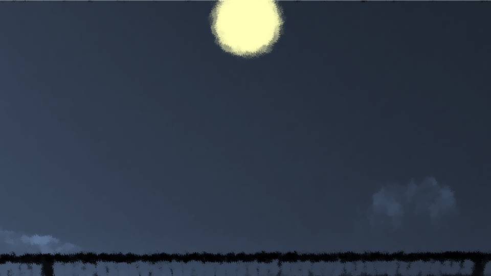

This scene is not unlocked yet in your progress
Disappearance

For Haruka and me it was the second time, for Goto the third, at Zahha.
As always, there were a lot of high-schoolers.
I could hear whispering voices.
As always, there were a lot of high-schoolers.
I could hear whispering voices.
"Hey, hey, the one who died today, they say it's that girl's dad."
"Seriously!? He died today and she's at Zahha?"
"What's more, they say that third-year got questioned as the culprit."
High-schoolers get their information fast.
"Seriously!? He died today and she's at Zahha?"
"What's more, they say that third-year got questioned as the culprit."
High-schoolers get their information fast.

Haruka seemed bothered by the eyes around her.
"Haruka, there's no need to worry about it, okay?"
"Yeah..."
That said, it's certain that, really, I'm in no position to be coming to Zahha like this either.
As soon as Haruka's story was over, I had to contact the relatives and the funeral home.
"Yeah..."
That said, it's certain that, really, I'm in no position to be coming to Zahha like this either.
As soon as Haruka's story was over, I had to contact the relatives and the funeral home.

"Niimura-senpaaai!"
No sooner had she taken her seat than Goto raised her bright voice.
"Hey, hey, is it your treat this time too!?"
No sooner had she taken her seat than Goto raised her bright voice.
"Hey, hey, is it your treat this time too!?"

"A-are you an idiot!? I already used up today's budget!"

"Aww, Senpai, you cheapskaaate!"
"Are you an idiot!? You hyena!"
"Are you an idiot!? You hyena!"
"Whooo are you calling a hyena!
To this genius pretty girl, as everyone agrees, me included, Erina Goto!"
"Since when are you a pretty girl!"
"Since when are you a pretty girl!"
"Now, now..."
That's right, whenever the three of us get together, it's usually like this.
This atmosphere feels so nostalgic.
That's right, whenever the three of us get together, it's usually like this.
This atmosphere feels so nostalgic.
"Mwahahahaha! I put a cuuurse on them. So the culprit is meee."
"Y-you...! You'd poke at something that touchy!?"
"I'm a third-year in high school and I've still got eighth-grader syndroooome."
"Y-you...! You'd poke at something that touchy!?"
"I'm a third-year in high school and I've still got eighth-grader syndroooome."

"Gyaah! Damn... by now it's completely my embarrassing past..."

"............?"
It seemed a text message had arrived from someone I didn't know.
Was it spam?
It seemed a text message had arrived from someone I didn't know.
Was it spam?
“This is Ise from Motoki Police Station. Thanks for all your trouble today. There's something I couldn't tell you earlier, so please contact this phone number right away, somewhere Niimura-san isn't around.”
What... does this mean...?
I immediately sent a look to Goto.
What... does this mean...?
I immediately sent a look to Goto.

"Hey, hey, Niimura-senpai, never mind that―"
Goto seemed to have caught on right away, and she stopped her blatant teasing of Haruka.

"Aaaaaah!!"
Suddenly Haruka stood up and screamed.
"What's wrong, Haruka!?"
"Senpai!?"
A tense atmosphere returned between us once again.
Suddenly Haruka stood up and screamed.
"What's wrong, Haruka!?"
"Senpai!?"
A tense atmosphere returned between us once again.

"Ah... ahh...!"
Haruka's whole body was trembling.
Haruka's whole body was trembling.

"I knew it...!"
This time, it seemed Haruka's phone had rung.
This time, it seemed Haruka's phone had rung.

"Hello!?
Yes... yes...
I'll be right there!"
"Sorry, you guys! We'll talk later!"
"What on earth is going on!?"
"What on earth is going on!?"

"Did you guys forget!?
We ordered same-day pizza delivery at Motoki Station, didn't we!
Sorry! I'll be right back!"
"............"
"She's the most pizza-crazy girl in Japan..."
"If we can't hear Haruka's story, there's nothing for it... Shall we leave too..."
"I'll send Senpai a message saying we're heading back..."
"She's the most pizza-crazy girl in Japan..."
"If we can't hear Haruka's story, there's nothing for it... Shall we leave too..."
"I'll send Senpai a message saying we're heading back..."


The sun had already set completely.
It seemed Goto had left her bicycle with the police, so for the time being I decided to have her come with me.
"Come to think of it, I left my bicycle in front of the station too..."
"If you tell Ojisan, it'll be fine. Also, you've got a lot of tough preparations ahead, right? I'll help too."
"Yeah... thank you, Goto."
It seemed Goto had left her bicycle with the police, so for the time being I decided to have her come with me.
"Come to think of it, I left my bicycle in front of the station too..."
"If you tell Ojisan, it'll be fine. Also, you've got a lot of tough preparations ahead, right? I'll help too."
"Yeah... thank you, Goto."

"No, no. Senpai, I owe you more than I can ever repay!"
"There you go exaggerating again..."
"There you go exaggerating again..."
"It's no exaggeration. I'm who I am today thanks to you, Senpai..."
Goto says this kind of thing at every opportunity.
Goto says this kind of thing at every opportunity.

"Now then, what should I do?"
"Then, could you look for the relatives' address book? I think it's probably on one of the shelves."
"Understood!"
"Then, could you look for the relatives' address book? I think it's probably on one of the shelves."
"Understood!"
Maybe I'll look up how funerals are done.
Hmm... but in cases like this, does the sect matter or something?
Does our family even have a sect or anything?
The Niimura family seems to be of a special sect, though.
Hmm... but in cases like this, does the sect matter or something?
Does our family even have a sect or anything?
The Niimura family seems to be of a special sect, though.

Oh, come to think of it―
"Senpai, you got a message earlier, right? One you can't tell Niimura-senpai about..."
"Yeah, I just remembered too. Ise-san said to contact him right away."
"You'd better call quickly, you know?"
"Yeah... Goto, look for the address book for me."
"Then, speakerphone, please."
"Yeah, I just remembered too. Ise-san said to contact him right away."
"You'd better call quickly, you know?"
"Yeah... Goto, look for the address book for me."
"Then, speakerphone, please."
"Hello, this is Ise!"
"Ise-san, it's Kogori."
"All right, you called sooner than I expected! Listen, stay calm and listen carefully! It's about this incident!"
As I thought, it seemed to be no ordinary matter.
"Ise-san, it's Kogori."
"All right, you called sooner than I expected! Listen, stay calm and listen carefully! It's about this incident!"
As I thought, it seemed to be no ordinary matter.
"The one who killed Ryoji Kogori-san is...
Mifuyu Niimura, almost without a doubt..."
"So... it's true after all..."
"That thing earlier, about it being better to talk in a 'place where people will see you'... Kogori-san and Niimura-san, never be alone, either of you, got it!? The culprit might be targeting you!"
"So... it's true after all..."
"That thing earlier, about it being better to talk in a 'place where people will see you'... Kogori-san and Niimura-san, never be alone, either of you, got it!? The culprit might be targeting you!"
"No way...! Haruka already went home, and Goto and I are at home too...!"
"You're not at Zahha!? Don't move from there, no matter what! I'm heading over right now!"
"You're not at Zahha!? Don't move from there, no matter what! I'm heading over right now!"
"Goto, what do we do...!"
"Senpai... I found something like this..."

Goto handed me a single sheet of paper.
This was no time to be reading notes, but Goto was telling me to read it right now.
It was written in Dad's handwriting.
This was no time to be reading notes, but Goto was telling me to read it right now.
It was written in Dad's handwriting.

To Akane,
At present, Shiyo 800, April 6 23:00.
The reason I go to the trouble of writing this down on paper and not in an email is so that no evidence of any kind leaks out.
On the night of Shiyo 800, April 7, that is, tomorrow, I have decided to meet Mifuyu-san. I will negotiate that matter.
Akane, I am sorry to ask this of you, but as much as you can, please try to act as usual in front of Natsumi.
At present, Shiyo 800, April 6 23:00.
The reason I go to the trouble of writing this down on paper and not in an email is so that no evidence of any kind leaks out.
On the night of Shiyo 800, April 7, that is, tomorrow, I have decided to meet Mifuyu-san. I will negotiate that matter.
Akane, I am sorry to ask this of you, but as much as you can, please try to act as usual in front of Natsumi.
Needless to say, if this becomes public, Natsumi and Haruka-chan will probably no longer be able to live in society.
Everything is for the two of them. Above all, Natsumi must never find out anything at all.
Everything is for the two of them. Above all, Natsumi must never find out anything at all.
And we have no choice but to have Haruka-chan go on living believing in the curse.
If we don't, Haruka-chan, too, will probably be erased from society.
You already heard this from me, but be very careful about Haruka-chan's cell phone.
There is no knowing what may be in this house, either.
As much as you can, please live as usual.
If we don't, Haruka-chan, too, will probably be erased from society.
You already heard this from me, but be very careful about Haruka-chan's cell phone.
There is no knowing what may be in this house, either.
As much as you can, please live as usual.
Believe in me and wait. By the morning of April 8, it should all be over.
Mifuyu-san is no fool either. She probably won't lay a hand on our family.
In return, though, Mifuyu-san's true identity can't be made common knowledge either.
Mifuyu-san is no fool either. She probably won't lay a hand on our family.
In return, though, Mifuyu-san's true identity can't be made common knowledge either.
But if anything should happen, on April 8 you must absolutely not leave Natsumi alone.
If you find yourself unable to act, make sure she spends it together with Haruka-chan, just the two of them.
If you have her keep staying at the police station for no reason, the police may get suspicious.
Natsumi and Haruka-chan mustn't find out, so do it carefully.
I'm counting on you.
Ryoji Kogori
If you find yourself unable to act, make sure she spends it together with Haruka-chan, just the two of them.
If you have her keep staying at the police station for no reason, the police may get suspicious.
Natsumi and Haruka-chan mustn't find out, so do it carefully.
I'm counting on you.
Ryoji Kogori
My hands wouldn't stop shaking.
It felt like my trembling hands might tear the paper.
I didn't know what Dad was talking about.
But, Dad had known everything. Mom knows too...!
It felt like my trembling hands might tear the paper.
I didn't know what Dad was talking about.
But, Dad had known everything. Mom knows too...!
"Goto... what should I do..."
"Please calm down! Let's wait for Ojisan!"
"Please calm down! Let's wait for Ojisan!"
The sound of the next-door balcony's glass breaking―

I went out onto the balcony, but I couldn't see anything around...
But, it was certain that the glass of the Niimuras' balcony had been broken.
But, it was certain that the glass of the Niimuras' balcony had been broken.
 video: 桜.wmv
video: 桜.wmvThen, a strong wind mixed with cherry blossoms brushed my cheek.
video: 桜.wmv"Natsumiii!"
video: 桜.wmvThe instant the wind hit me, Haruka's voice from far away.
And right after that, that intuition, which had been oddly dull today, raced suddenly through my mind.
Someone's there...! Haruka's in danger...!
And right after that, that intuition, which had been oddly dull today, raced suddenly through my mind.
Someone's there...! Haruka's in danger...!
"Senpai, where are you going!?"

"Harukaaa!!"
"Natsumi! Run!!"
I faintly heard Haruka's voice. From way up above...
Which means, the roof...!?
"Wait for me, Haruka! I'm coming right now!"
"Idiot! Don't come!"
"Natsumi! Run!!"
I faintly heard Haruka's voice. From way up above...
Which means, the roof...!?
"Wait for me, Haruka! I'm coming right now!"
"Idiot! Don't come!"

You can't get to the roof by elevator.
There was no choice but to take the stairs.
The roof is above the 5th floor.
Why would the culprit... why would Obasan take Haruka up to the roof, of all places...?
There was no choice but to take the stairs.
The roof is above the 5th floor.
Why would the culprit... why would Obasan take Haruka up to the roof, of all places...?
No...! Until I see the culprit's face, I don't want to believe that Obasan is the culprit!
Why would she need to lay a hand on her own daughter?
Obasan always doted on Haruka.
Surely... surely this is some kind of mistake!
Why would she need to lay a hand on her own daughter?
Obasan always doted on Haruka.
Surely... surely this is some kind of mistake!

Beyond here is the culprit who killed Dad...?
I wanted to wait for Ise-san to come, but right now I had to rescue Haruka even one second sooner.
There's no time to hesitate...!
I wanted to wait for Ise-san to come, but right now I had to rescue Haruka even one second sooner.
There's no time to hesitate...!

The roof was lit by the light of a large moon.

And on top of the roof's fence, a single large figure.

Looking closely, two figures were pressed together into one.
One was definitely Haruka. And the other one...
One was definitely Haruka. And the other one...

A strange figure wearing big red robes and a Noh mask had its arms wrapped around Haruka's body.
"Natsumi, why'd you come!?
Let go! Damn you!"
Haruka was struggling and kicking her legs, but the strange figure didn't budge an inch.
What did it mean to do with Haruka in a place with footing this bad?
But if this strange figure really was Obasan, maybe words would get through.
Haruka was struggling and kicking her legs, but the strange figure didn't budge an inch.
What did it mean to do with Haruka in a place with footing this bad?
But if this strange figure really was Obasan, maybe words would get through.
"Y-you idiot! Why are you coming over here! I'm telling you to run, aren't I!"
Ignoring Haruka's warning, I slowly walked closer.
Ignoring Haruka's warning, I slowly walked closer.
"You...
are you really Obasan...? Are you Haruka's mom...?"
"N-Natsumi... what are you saying... Mom would never do something like..."
"Obasan..."
I knelt on the ground.
And I put both my hands on the ground too―
"Obasan..."
I knelt on the ground.
And I put both my hands on the ground too―
"Obasan... about Haruka's dad...
I heard about it just now. I'm truly... sorry."
Just then, a strong wind blew across the roof.
Just then, a strong wind blew across the roof.
The wind blew away the strange figure's hood and Noh mask, and the bare face beneath was revealed.

"Mom... what are you doing...
Mom... a shinigami... That's a lie, right...?"
That bare face was unmistakably Haruka's mom.
But it wasn't the cheerful expression she always showed; it was more expressionless than a Noh mask.
That bare face was unmistakably Haruka's mom.
But it wasn't the cheerful expression she always showed; it was more expressionless than a Noh mask.

"Natsumi-chan...
It's... not about that anymore..."

Just then, the roof door opened, and Ise-san burst in together with other police officers.

"Mifuyu Niimura! You're under arrest on suspicion of murder and abandoning a body! Release Haruka Niimura-san!"
Ise-san pointed the muzzle of his gun at Obasan.
Ise-san pointed the muzzle of his gun at Obasan.
"Kogori-senpai! Niimura-senpai!"
"Goto-chan! I told you not to come!"
"What are you going to do with my senpais!?"
"Goto-chan! I told you not to come!"
"What are you going to do with my senpais!?"
"Haah... it can't be helped... with all these people watching...
And before I knew it, they found out about me too...
So I was deceived, wasn't I..."
Deceived...? What was she talking about...?
Deceived...? What was she talking about...?
"Let's go, Haruka..."
Obasan clutched Haruka's body tightly in her arms, and then Haruka's body and hers gave a slow sway.
Obasan clutched Haruka's body tightly in her arms, and then Haruka's body and hers gave a slow sway.
"Harukaaa!!!"
"Senpai, look out!"
Beside myself, I climbed up the fence.
Haruka fell, together with Obasan, toward the parking lot.
It can't be...! Haruka...!
"Senpai, look out!"
Beside myself, I climbed up the fence.
Haruka fell, together with Obasan, toward the parking lot.
It can't be...! Haruka...!


Huh...?
I climbed over the fence and looked down from the roof, but no one was there.
No matter how hard I strained my eyes, I couldn't see a single figure.
I climbed over the fence and looked down from the roof, but no one was there.
No matter how hard I strained my eyes, I couldn't see a single figure.

That's impossible...! Even if it's night, with a moon this bright, there's no way I wouldn't see them...!
"Kogori-senpai! Niimura-senpai is...!"

 video: 桜.wmv
video: 桜.wmv
"Goto... Haruka, she..."
 video: 桜.wmv
video: 桜.wmv
"Haruka, she just vanished..."
Read ✓ Next: Inner Conflict →